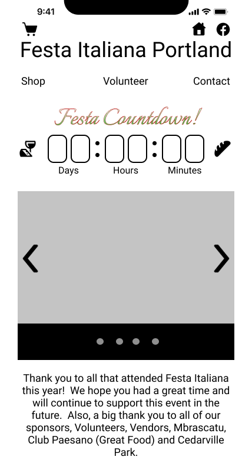

Festa Family

The official website of Festa Italiana Portland seeks a redesign to help lower the user bounce rate caused by the lack of secure payment and donated options.
By redesigning the website, my team and I want to make an approachable and user-friendly experience
for potential Festa supporters to learn about upcoming events, shop, and donate on the website without hesitation.
We hope to make the online transaction experience more seamless, raise more money and keep current community members engaged.
User Interviews
We began the case by interviewing Festa supporters to understand their struggle when visiting the original Festa Italiana website.
Learned that supporters who engage with non-profit organizations value a secure and transparent checkout process more than regeneration for their donations or gifts of gratitude.
Also interviewed stakeholders for their input about the redesign. They wish to keep some of their existing unified styles.

User Journey Map
Based on the information gathered from interviews, we mock-up a user persona, UX scenario, and user journey map.
Mood Board
We collect inspiration for a mood board and put together a UI style guide accordingly.
As designers, we want to represent the spirit of Festa Italiana's heritage and rustic roots while making all the information readable and accessible.
We stuck with slight variations of colors of the Italian flag and colors that resemble wine and olive oil.
These reds and greens are easy to read and capture the true spirit of the Festa.
Digital Wireframes
We constructed a new IA structure for the website. The main force of the website is to publish event updates, sell products from Italy, take donations, and volunteer signup.
Sketched out paper prototype, took inspiration from our competitor, and decided on our show stopper, which should be a countdown timer to the next Festa.
Desktop
Phone
Usability Testing
Although we want to use color to tile in with the theme of Festa - a cultural event, the lack of white space made our users take a long time reading through all the paragraphs before finishing the task from user testing.
So we conducted testing for a different layout with white space and icons.
Style A
Style B


All of us UX/UI designers had a great time interacting with the stakeholders of Festa Italiana Portland, and everyone evolved.
The Festa family is warm and welcoming. The whole working experience was informative and engaging.
Ethan DeBates
Ethan Moran
Jiaqian Zhao(JZ)
Tiffany Ng
My team and I interviewed 5 Festa supporters and attended 1 stakeholder meeting.
Conducted 5 usability testing.
Afterward, we made 4 iterations based on the feedback we collected.
My primary responsibilities were to create mood boards, UI style guides, the final prototype, etc.
Project start time: November 13th, 2021
Project end time: December 7th, 2021
If you are interested in the app and want to see a complete case study please contact me via email.